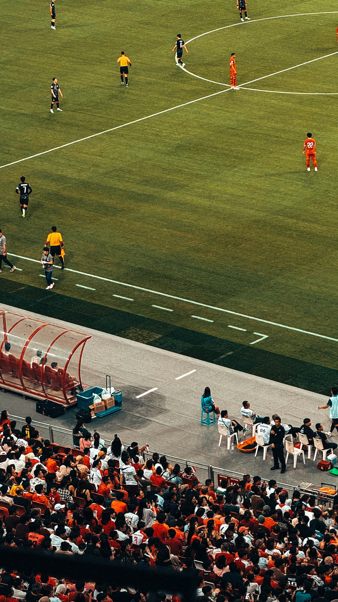
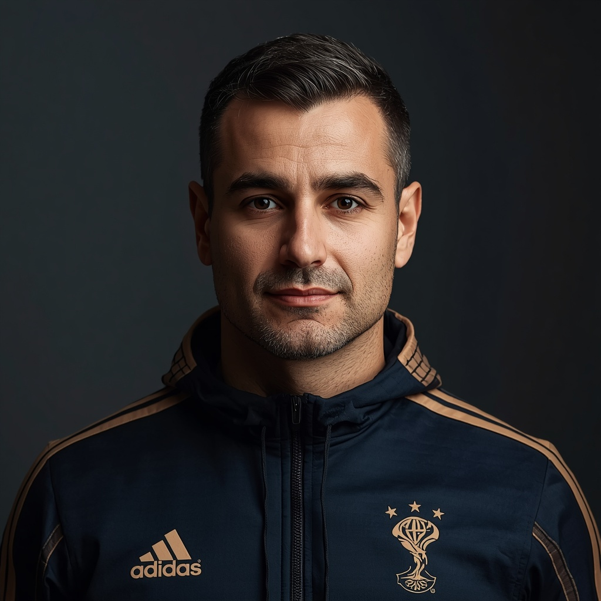
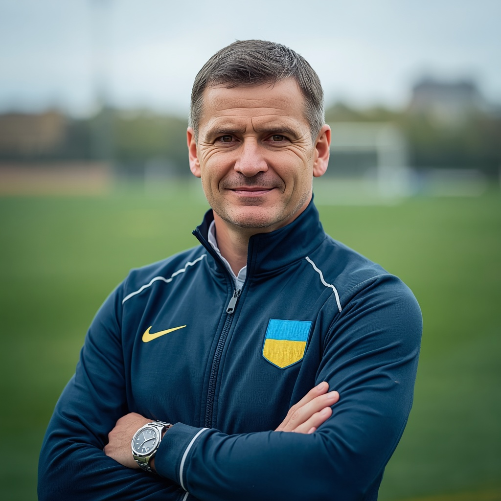
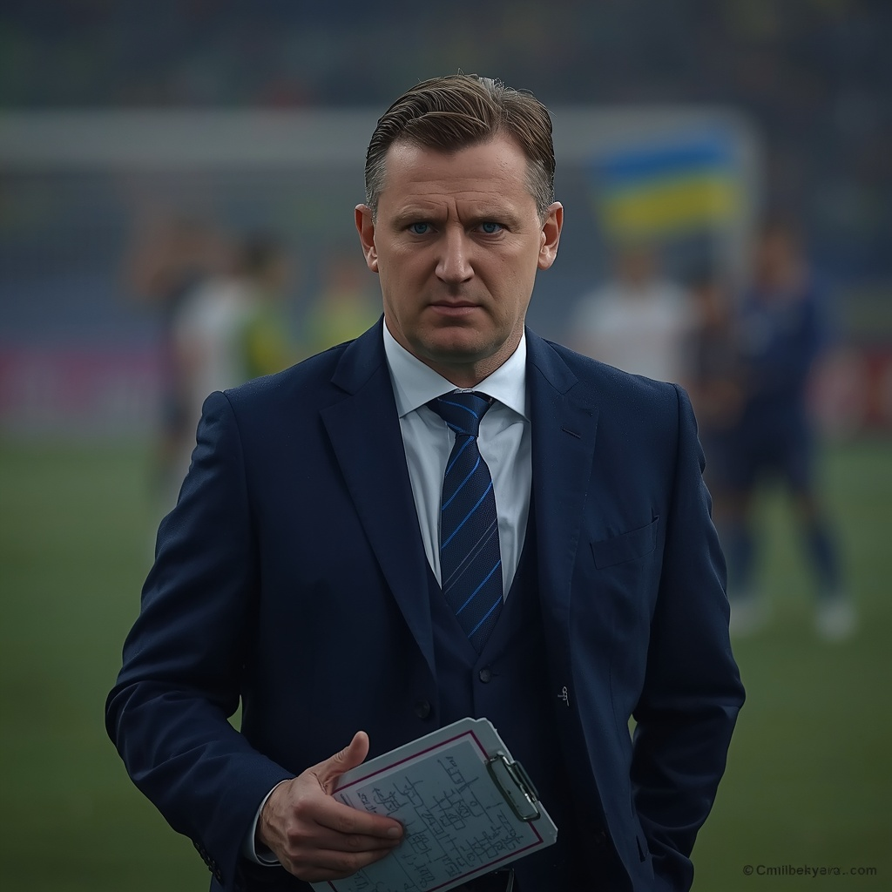
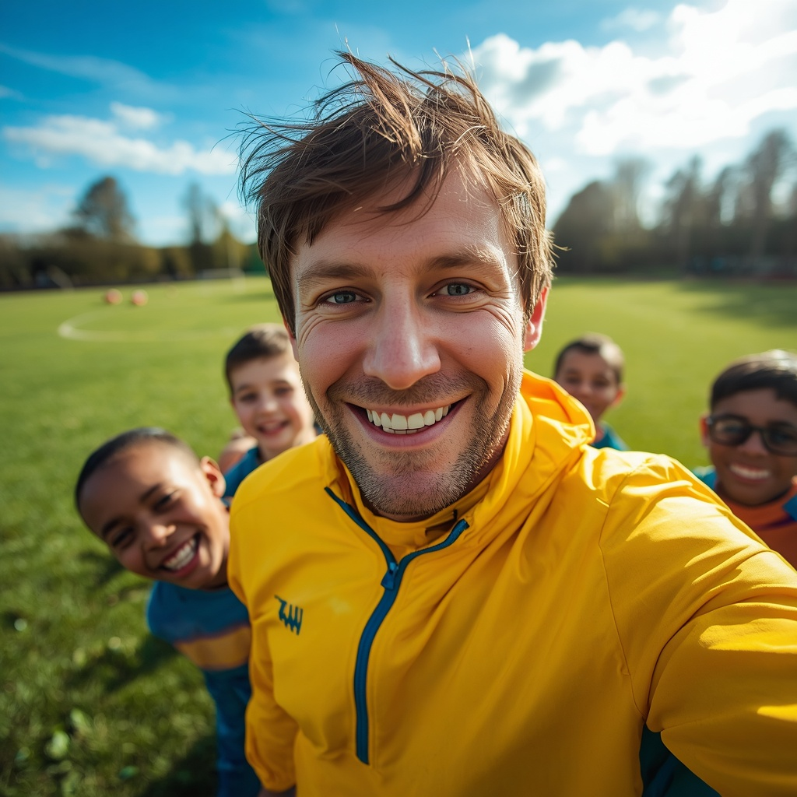
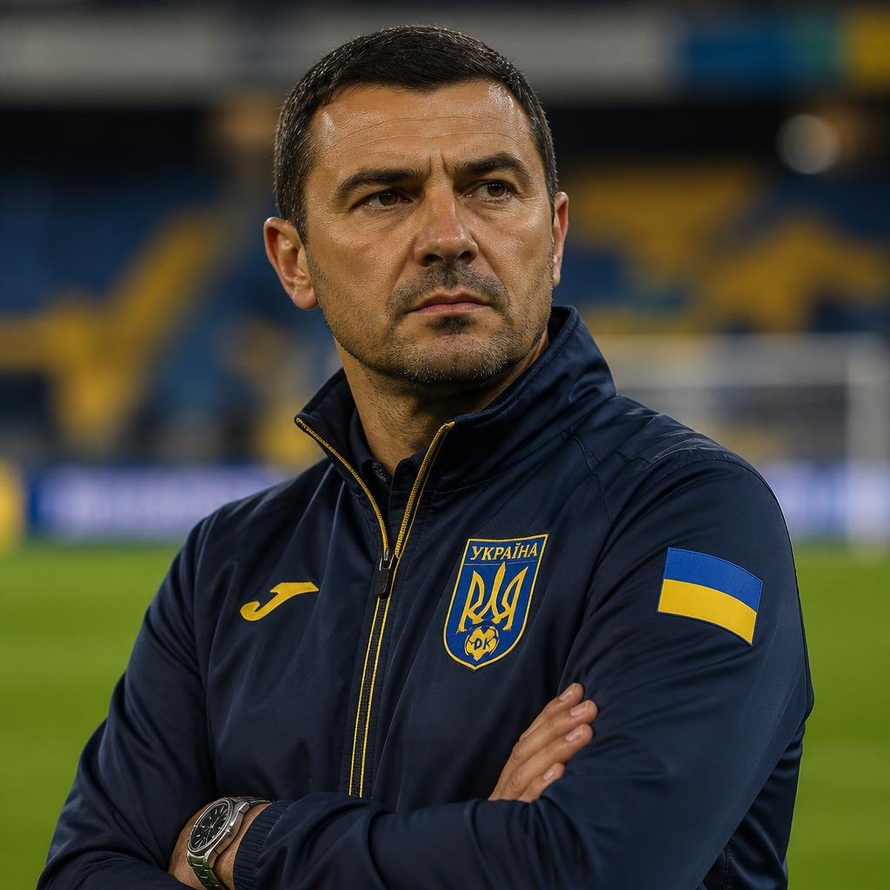
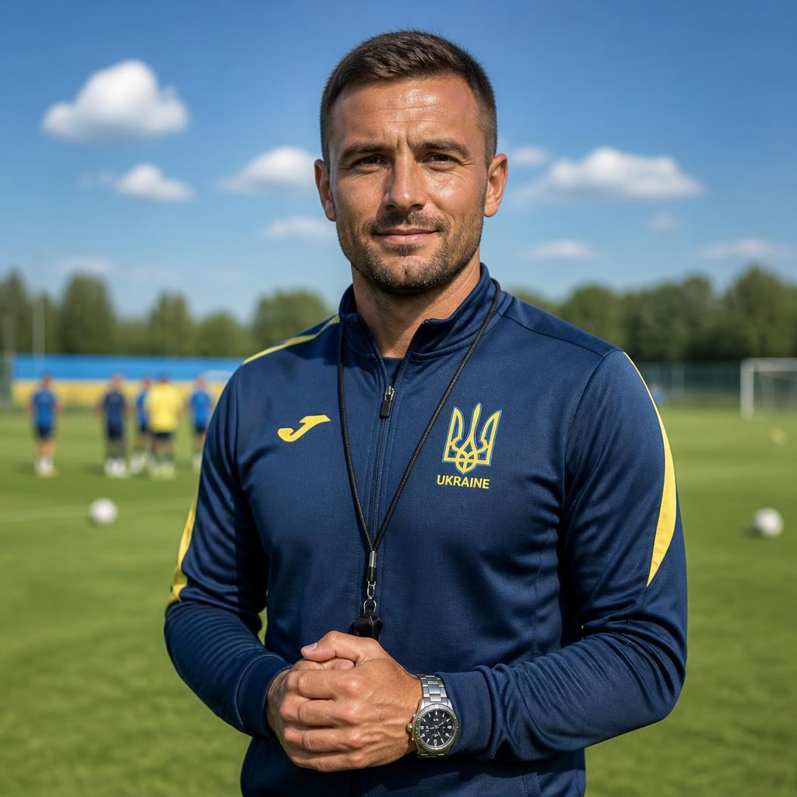

Футбол — найпопулярніший вид спорту у світі, ним займаються понад 250 мільйонів гравців у 200 країнах. Сучасні правила зародилися в Англії 1863 року, коли заснували Футбольну асоціацію. Грають на полі розміром 100–110 м завдовжки та 64–75 м завширшки, ворота — 7,32 м на 2,44 м. Найпрестижніші турніри: Чемпіонат світу (кожні 4 роки) та Ліга чемпіонів УЄФА. Найкращі гравці в історії — Пеле, Марадона, Мессі, Роналду. Матч обслуговує головний арбітр і два помічники, з 2018 року використовують VAR (відеоповтори). Футбол розвиває швидкість, витривалість і тактичне мислення.


Гра триває 90 хвилин (2 тайми по 45 хв). Команда має 11 гравців, заміни — зазвичай до 5 за матч. Мета — забити м’яч у ворота суперника. Руками грати не можна (крім воротаря у штрафному майданчику). Поза грою (офсайд) — якщо атакуючий гравець ближче до воріт, ніж передостанній захисник, у момент пасу. Порушення (підніжка, удар, гра рукою) — штрафний або пенальті (з 11 м). Жовта картка — попередження, червона — вилучення. Аут вкидають руками з-за бічної лінії. Кутовий — якщо м’яч перетнув лінію воріт від захисника.

Ігор Василенко — Футбол. Досвід роботи з дітьми: 6 років. Спеціалізація: постановка техніки, координація, ігрове навчання. Досягнення: виховав 10 гравців академії «Динамо». Про себе: «Футбол має приносити радість — тоді приходить і результат».

Андрій Петренко — Футбол. Досвід: 10 років. Спеціалізація: дриблінг, швидкість, перший дотик. Досягнення: грав у молодіжці «Динамо» Київ. Про себе: «Зробимо твою гру швидшою та впевненішою».

Олександр Ковальчук — Футбол. Досвід: 12 років. Спеціалізація: тактика, витривалість, індивідуальна техніка. Досягнення: ліцензія UEFA B, вивів 3 команди у про-лігу. Про себе: «Вчу бачити поле на три кроки вперед і перемагати тактично».

Владислав Ткаченко — Футбол (базовий курс). Досвід: 2 роки. Спеціалізація: контроль м'яча, пас, координація. Досягнення: підготував 20+ новачків до вступу в дитячі секції. Про себе: «Поставимо правильну базу з нуля. Головне — це регулярність та бажання вчитися».

Віталій Мельник — Футбол (інтенсив). Досвід: 5 років. Спеціалізація: точність ударів, контратаки, гра в захисті. Досягнення: чемпіон області, виховав найкращого бомбардира юнацької ліги. Про себе: «Перетворюю слабкі сторони на твою головну перевагу на полі».

Богдан Коваль — Футбол (для початківців). Досвід: менше 1 року. Спеціалізація: розминка, прості паси, правила гри. Досягнення: випускник інституту фізкультури. Про себе: «Допоможу розібратися з азами футболу та підготую до серйозніших навантажень».